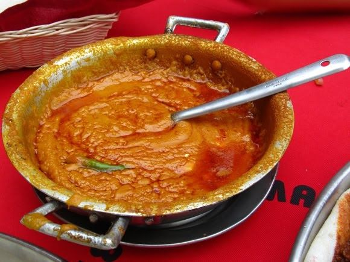

ETHIOPIAN SHIRO WAT
An aside- if anyone is at all interested- you can acquire Shiro Powder to make this dish as well. Shiro powder is different from chickpea flour/ besan. It is actually a mixture of chickpea flour, spices, and seasonings. It is a just-add-water type dish that is an even faster process to make. However, I cannot comment on its quality since I’ve never made Shiro that way before.
INGREDIENTS
- ½ cup oil
- ½ cup chickpea flour
- 2 medium onions pureed
- 1 roma tomato pureed
- 4 cloves of garlic chopped
- 2 tablespoons niter kibbeh Ethiopian spiced clarified butter
- 2 to 2 ½ cups of water
- 3 tablespoons berbere spice
- 1 teaspoon garlic powder
- ¼ teaspoon sugar
- Salt to taste
- 1 jalepeno chopped (optional)
INSTRUCTIONS
-
Bring a heavy bottom stockpot to medium heat. Add pureed onions to the dry pan, and saute until they become dry and start to take on color- about 4-5 minutes. Add the oil and berbere spice. Saute for 1-2 minutes until fragrant.
-
Next add tomato and chopped garlic. Saute for 2-3 minutes more.
-
Now start whisking in about half of the chickpea flour. Gradually start to add about 1 cup of water. Whisk in the remaining chickpea flour and an additional 1 cup of water. Whisk until mixture is very smooth. Add remaining ½ cup of water if you prefer your shiro a little thinner.
-
Heat until the shiro begins to pop (simmer). Then add the niter kibbeh, garlic powder, sugar, and salt to taste, stirring until combined.
-
Simmer for about 5-10 minutes over low heat until the flavors combine and the oil separates slightly from the shiro.
Garnish with jalepeno, if desired.
Serve with fresh injera.
Served Shiro wat with fresh injera